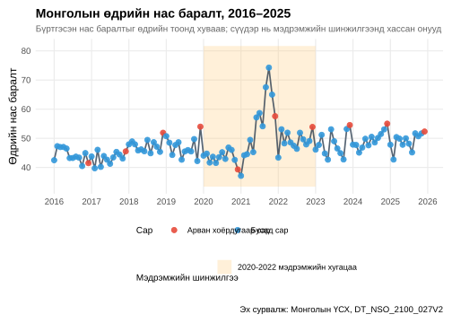
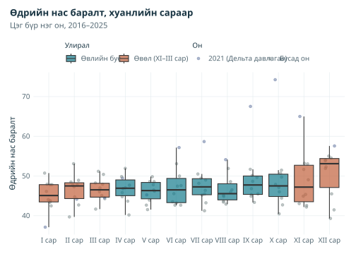
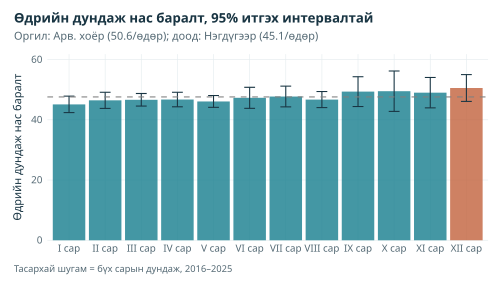
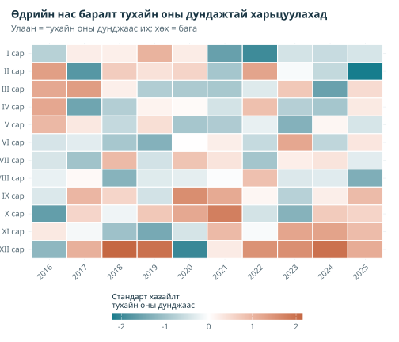
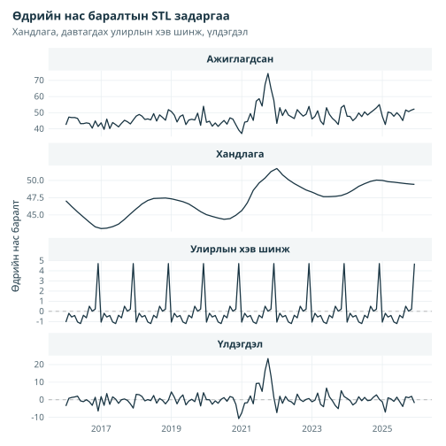
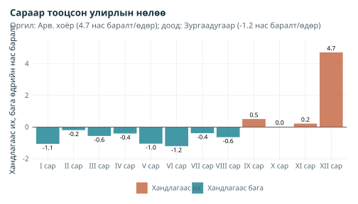
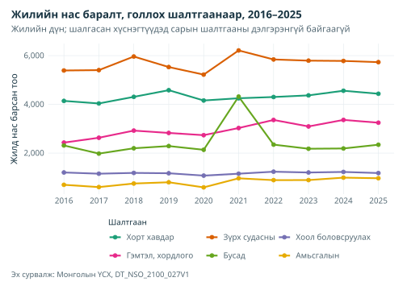
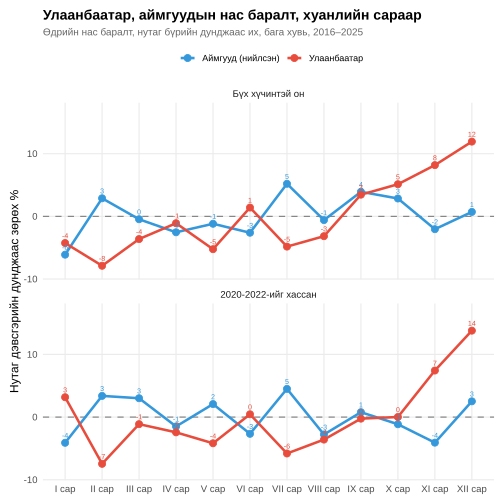
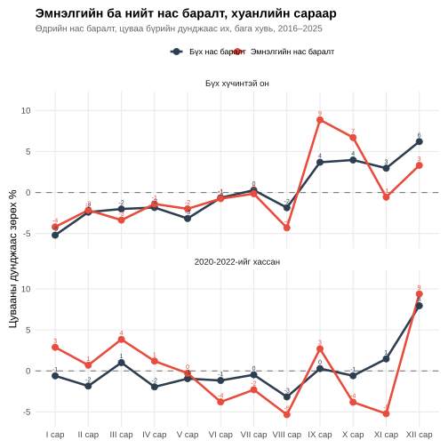

Арван хоёрдугаар сард бүртгэгдсэн нас баралт хамгийн олон уу?
Эх сурвалж:vignettes/articles/mortality-analysis.Rmd
mortality-analysis.RmdБолгоомжтой уншина уу. Гол ажиглалт болох арван хоёрдугаар сарын оргилын бодит нас баралттай холбоотой утга баталгаажаагүй. ҮСХ нас баралтыг болсон сараар бус, бүртгэсэн сараар тоолдог бол жилийн эцсийн бүртгэл нөхөлт арван хоёрдугаар сарын тоог өсгөж болно. Сарын цуваанд ямар огноо хэрэглэдэг нь тодорхойгүй хэвээр. Арван хоёрдугаар сарын үр дүнг тэр сард олон хүн нас барсны нотолгоо бус, нийтлэгдсэн статистикийн хэв шинж гэж үзнэ.
library(mongolstats)
library(dplyr)
library(tidyr)
library(ggplot2)
library(lubridate)
library(scales)
# Шалгасан сургалтын туслах функцүүд багцад дагалдах бөгөөд кодыг нь үзэж болно.
source(system.file("examples", "analysis-helpers.R", package = "mongolstats"), local = TRUE)
source(system.file("examples", "plot-style.R", package = "mongolstats"), local = TRUE)Тойм
Нийгмийн сүлжээний нийтлэл Монголд «хамгийн олон нас баралт арван хоёрдугаар сард тохиолддог» гэж мэдэгдэж, шинэ жилийн баяр шалтгаан байж болохыг санал болгосон. Энэ өгүүлэл КОВИД-19-ийн цар тахлын 2020–2022 хугацааг харгалзан, уг мэдэгдлийг ҮСХ-ны сарын нас баралтын статистикаар шалгана.
Асуултууд
- Арван хоёрдугаар сард нас баралт хамгийн олон уу? Өдрийн тоо өөр саруудыг ижил нөхцөлд оруулсны дараа арван хоёрдугаар сар оргил мөн үү?
- Бүртгэгдсэн өвөл, өвлийн бус дундаж хэр ялгаатай вэ? Хуанлийн хэв шинжийг дүрсэлж болох ч эдгээр өгөгдөл дангаараа хүйтний нөлөөг үнэлэхгүй.
- Эдгээр өгөгдөл шалтгааныг тайлбарлаж чадах уу? Сарын нийт дүн, жилийн нас баралтын шалтгаан, бүс нутгийн болон эмнэлгийн өгөгдлөөс юу мэдэж болох, юу мэдэх боломжгүй вэ?
Өгөгдлийн эх сурвалж
ҮСХ-ны гурван хүснэгт ашиглана:
| Хүснэгт | Тайлбар | Нарийвчлал |
|---|---|---|
| DT_NSO_2100_027V2 | Аймаг, нийслэлийн нас баралт, сараар | Сараар |
| DT_NSO_2100_027V3 | Аймаг, нийслэлийн эмнэлгийн нас баралт, сараар | Сараар |
| DT_NSO_2100_027V1 | Нас баралт, голлох шалтгаан, бүс нутаг, оноор | Жилээр |
Бүх зураг тоонд үндэслэсэн бөгөөд хүн амд тооцсон нас баралтын түвшин биш. Хугацааны турш Монголын хүн ам өссөн тул аажим өсөлтийн нэг хэсэг хүн амын өсөлт, хөгшрөлтийг тусгана. Өдөрт хуваах нь сарын уртыг засахаас эрсдэлд өртөх хүн амыг тохируулахгүй. Оны доторх өөрчлөлт, насны бүтэц харьцуулалтад мөн нөлөөлнө.
1. Нас баралтын сарын хэв шинж
Өгөгдөл татаж, бэлтгэх
death_tbl <- "DT_NSO_2100_027V2"
months_meta <- nso_dim_values(death_tbl, "Month", labels = "en")
# ҮСХ-ны сарын хүснэгтэд хуанлийн талбар, өдрийн нас баралт нэмэх
parse_months <- function(data) {
data |>
mutate(
date = as.Date(paste0(Month_en, "-01")),
year = year(date),
month = month(date),
month_name = factor(month.abb[month], levels = month.abb),
days = unname(days_in_month(date)),
daily_avg = value / days
)
}
# Нийтлэгдсэн сар бүрийн улсын нас баралт; Region-ийн "0" код нь нийт дүн
deaths_all <- nso_data(
tbl_id = death_tbl,
selections = list(Region = "0", Month = months_meta$label_en),
labels = "en"
) |>
parse_months() |>
filter(!is.na(value)) |>
arrange(date)
analysis_keys(deaths_all, "date")
analysis_count_values(deaths_all$value)
# Зөвхөн арван хоёр мөр бус, ялгаатай, ажиглагдсан арван хоёр сарыг шаардана.
complete_years <- deaths_all |>
summarise(n = n(), n_months = n_distinct(month), .by = year) |>
filter(n == 12, n_months == 12) |>
pull(year)
stopifnot(length(complete_years) >= 3L, all(diff(complete_years) == 1))
first_year <- min(complete_years)
last_year <- max(complete_years)
n_years <- length(complete_years)
period <- paste0(first_year, "–", last_year)
covid_years <- 2020:2022
deaths_monthly <- deaths_all |>
filter(year %in% complete_years) |>
mutate(
Month_Type = if_else(month == 12, "December", "Other months"),
Season = if_else(month %in% c(11, 12, 1, 2, 3), "Winter (Nov–Mar)", "Non-winter")
)
# Цагийн цувааг задлахаас өмнө тогтмол алхамтай сарын индекс шаардана.
stopifnot(identical(
deaths_monthly$date,
seq(as.Date(paste0(first_year, "-01-01")),
as.Date(paste0(last_year, "-12-01")),
by = "month"
)
))Сарын цуваа 2016 оны нэгдүгээр сараас эхэлнэ. Шинжилгээнд 2016–2025 оны 10 бүрэн оныг ашиглав.
Арга зүйн тайлбар: Сарын бүх харьцуулалтад өдрийн нас баралт (тухайн сарын нас баралт ÷ сарын өдөр) хэрэглэнэ. Ингэснээр хоёрдугаар сар (28 эсвэл 29 өдөр), 30 хоногтой сар зөвхөн богино учраас 31 хоногтой сараас бага харагдахгүй. Арван хоёрдугаар, нэгдүгээр сар хоёулаа 31 хоногтой тул энэ засвар тэдгээрийн харьцуулалтыг өөрчлөхгүй.
КОВИД-19-ийн нөхцөл дэх цагийн цуваа
covid_periods <- tibble::tribble(
~Start, ~End, ~Phase,
"2020-01-01", "2022-12-31", "2020-2022 sensitivity window"
) |>
mutate(across(c(Start, End), as.Date))
y_range <- range(deaths_monthly$daily_avg)
y_min <- y_range[1] * 0.9
y_max <- y_range[2] * 1.1
deaths_monthly |>
ggplot(aes(x = date, y = daily_avg)) +
geom_rect(
data = covid_periods,
aes(xmin = Start, xmax = End, ymin = y_min, ymax = y_max, fill = Phase),
inherit.aes = FALSE, alpha = 0.3
) +
geom_line(color = "#183442", linewidth = 0.8, alpha = 0.8) +
geom_point(aes(color = Month_Type), size = 2.5, alpha = 0.9) +
scale_color_manual(
values = c("December" = "#C2623D", "Other months" = "#167D8D"),
name = "Month"
) +
scale_fill_manual(
values = c(
"2020-2022 sensitivity window" = "#ffcc80"
),
name = "Sensitivity analysis"
) +
scale_x_date(date_breaks = "1 year", date_labels = "%Y") +
scale_y_continuous(labels = comma, limits = c(y_min, y_max)) +
labs(
title = paste0("Deaths per Day in Mongolia, ", period),
subtitle = "Recorded deaths divided by days; shading marks years excluded in sensitivity analyses",
x = NULL,
y = "Deaths per day",
caption = "Source: NSO Mongolia, DT_NSO_2100_027V2"
) +
theme(legend.position = "bottom", legend.box = "vertical", legend.box.just = "left") +
guides(
color = guide_legend(order = 1, ncol = 1),
fill = guide_legend(order = 2, nrow = 2)
)
Цуваанаас харагдах зүйл:
- Түвшин: Эдгээр нь хүн амд тооцсон нас баралтын түвшин бус, өдрийн бүртгэлийн тоо юм. Хүн амын өсөлт, хөгшрөлт цувааны өөрчлөлтөд нөлөөлж болно.
- Захын утгууд: Ажиглагдсан хамгийн өндөр сар нь 2021 оны аравдугаар сар, өдөрт 74.3; хамгийн бага нь 2021 оны нэгдүгээр сар, өдөрт 37.1 байна. Зөвхөн цаг хугацаагаар нь нас баралтын өөрчлөлтийг мэдээллийн доголдлоос ялгахгүй.
- Арван хоёрдугаар сар: Улаан цэг нь бусад сартай харьцуулах арван хоёрдугаар сарын ажиглалт.
Сарын тархалт
monthly_stats <- deaths_monthly |>
summarise(
deaths = sum(value), days = sum(days),
mean_daily = mean(daily_avg),
sd_daily = sd(daily_avg),
n = n(),
.by = c(month, month_name)
) |>
mutate(
se = sd_daily / sqrt(n),
ci_lower = mean_daily - qt(0.975, n - 1) * se,
ci_upper = mean_daily + qt(0.975, n - 1) * se
) |>
arrange(month)
deaths_monthly |>
mutate(year_type = if_else(year == 2021, "2021 (Delta wave)", "Other years")) |>
ggplot(aes(x = month_name, y = daily_avg)) +
geom_point(
aes(color = year_type),
position = position_jitter(width = 0.2, height = 0, seed = 2025),
alpha = 0.5, size = 1.5
) +
geom_boxplot(aes(fill = Season), alpha = 0.7, outlier.shape = NA) +
scale_fill_manual(
values = c("Winter (Nov–Mar)" = "#C2623D", "Non-winter" = "#167D8D"),
name = "Season"
) +
scale_color_manual(
values = c("2021 (Delta wave)" = "#5B6E9A", "Other years" = "#7f8c8d"),
name = "Year"
) +
scale_y_continuous(labels = comma) +
labs(
title = "Deaths per Day by Calendar Month",
subtitle = paste0("Each point is one year, ", period),
x = NULL,
y = "Deaths per day"
) +
theme(legend.position = "top") +
guides(fill = guide_legend(order = 1), color = guide_legend(order = 2))
Хайрцган графикийг унших: Тархалт бүр тухайн хуанлийн сарын он бүрийн нэг нас баралт/өдөр утгаас бүрдэнэ. Улирал тус бүрийн нийт нас баралтыг нийт өдөрт нь хуваасан өвөл–өвлийн бус нэгтгэсэн зөрүү -0.1%. Өвлөөс арван хоёрдугаар сарыг хасвал -1.7% болно. Онцолсон 2021 оны ажиглалт тухайн оны нөлөөг харах боломж олгоно. Эдгээр харьцуулалт температурын нөлөөг тогтоохгүй.
Сарын дундаж, итгэх интервалтай
Анхаарах нь: Эдгээр интервал 10 оныг бие даасан гэж үзсэн t тархалтад суурилна. Он хоорондын хамаарлыг үл тоож, КОВИД-19-ийн онуудыг хамруулсан тул зөвхөн ойролцоо баримжаа юм.
peak_month <- slice_max(monthly_stats, mean_daily, n = 1)
trough_month <- slice_min(monthly_stats, mean_daily, n = 1)
monthly_stats |>
mutate(bar_type = if_else(month == peak_month$month, "Peak month", "Other months")) |>
ggplot(aes(x = month_name, y = mean_daily)) +
geom_col(aes(fill = bar_type), alpha = 0.8) +
geom_errorbar(aes(ymin = ci_lower, ymax = ci_upper), width = 0.3, color = "#183442") +
geom_hline(yintercept = mean(monthly_stats$mean_daily), linetype = "dashed", color = "grey50") +
scale_fill_manual(values = c("Other months" = "#167D8D", "Peak month" = "#C2623D"), guide = "none") +
scale_y_continuous(labels = comma, expand = expansion(mult = c(0, 0.1))) +
labs(
title = "Mean Deaths per Day with 95% Confidence Intervals",
subtitle = paste0(
"Peak: ", peak_month$month_name, " (", fmt_num(peak_month$mean_daily),
"/day); lowest: ", trough_month$month_name, " (", fmt_num(trough_month$mean_daily), "/day)"
),
x = NULL,
y = "Mean deaths per day",
caption = paste0("Dashed line = average of all months, ", period)
)
Арван хоёрдугаар сарын дундаж өдөрт 50.6 бүртгэлийн нас баралт байна. Энэ нь бусад арван нэгэн сарын нийт нас баралтыг нийт өдөрт хуваасан дүнтэй харьцуулахад +6.8%. 2020-2022-ийг хасвал он бүрд ижил жин өгсөн сарын дундаж арван хоёрдугаар сард хамгийн өндөр хэвээр, тус сарын зөрүү +8.7% болно. Эдгээр нь дүрслэх харьцуулалт болохоос шалтгааныг батлахгүй.
2. Дулааны зураг: он × сар
heatmap_data <- deaths_monthly |>
mutate(
z_score = (daily_avg - mean(daily_avg)) / sd(daily_avg),
.by = year
) |>
mutate(month_name = factor(month_name, levels = rev(month.abb)))
heatmap_data |>
ggplot(aes(x = factor(year), y = month_name, fill = z_score)) +
geom_tile(color = "white", linewidth = 0.5) +
scale_fill_gradient2(
low = "#167D8D", mid = "white", high = "#C2623D",
midpoint = 0, name = "Standard deviations\nfrom year's mean"
) +
guides(fill = guide_colourbar(barwidth = grid::unit(85, "mm"), barheight = grid::unit(3, "mm"))) +
labs(
title = "Deaths per Day Relative to Each Year's Average",
subtitle = "Red = above that year's average; blue = below",
x = NULL,
y = NULL
) +
theme(
axis.text.x = element_text(angle = 45, hjust = 1),
legend.position = "bottom",
legend.key.width = unit(1.5, "cm")
)
Багана бүрийг өөрийн он дотор стандартчилсан тул энэ зураг абсолют түвшнийг бус, сар бүрийн тухайн он доторх байр суурийг харуулна. 10 оны 8-д арван хоёрдугаар сар өөрийн оны дунджаас их байна. Нэгдүгээр сар зөвхөн 4, хоёрдугаар сар 5 онд дунджаас их байв. 2021 онд зуны сүүл, намрын саруудад Дельта давлагаа давамгайлна.
3. Статистикийн шалгалт
Улирлын задаргаа (STL)
STL буюу Loess ашигласан улирал, хандлагын задаргаа нь цувааг тэгш хандлага, давтагдах улирлын хэв шинж, үлдэгдэлд хуваана.
ts_deaths <- ts(deaths_monthly$daily_avg, start = c(first_year, 1), frequency = 12)
# s.window = "periodic" нь бүх онд нийтлэг улирлын нэг хэв шинж тооцно;
# robust = TRUE нь 2021 оны өсөлт зэрэг ер бусын сарын жинг бууруулна.
decomp <- stl(ts_deaths, s.window = "periodic", robust = TRUE)
component_levels <- c("Observed", "Trend", "Seasonal pattern", "Remainder")
decomp_df <- tibble(
date = deaths_monthly$date,
Observed = as.numeric(ts_deaths),
Trend = as.numeric(decomp$time.series[, "trend"]),
`Seasonal pattern` = as.numeric(decomp$time.series[, "seasonal"]),
Remainder = as.numeric(decomp$time.series[, "remainder"])
) |>
pivot_longer(-date, names_to = "component", values_to = "value") |>
mutate(component = factor(component, levels = component_levels))
zero_lines <- tibble(
component = factor(c("Seasonal pattern", "Remainder"), levels = component_levels),
yintercept = 0
)
decomp_df |>
ggplot(aes(x = date, y = value)) +
geom_hline(
data = zero_lines, aes(yintercept = yintercept),
linetype = "dashed", color = "grey60", linewidth = 0.3
) +
geom_line(color = "#183442", linewidth = 0.6) +
facet_wrap(~component, ncol = 1, scales = "free_y") +
scale_x_date(date_breaks = "2 years", date_labels = "%Y") +
labs(
title = "STL Decomposition of Deaths per Day",
subtitle = "Trend, repeating seasonal pattern, and remainder",
x = NULL,
y = "Deaths per day"
) +
theme(strip.text = element_text(face = "bold", size = 11), panel.spacing = unit(0.5, "lines"))
Улирлын хэв шинж
seasonal_cycle <- tibble(
month = 1:12,
month_name = factor(month.abb, levels = month.abb),
seasonal_effect = as.numeric(decomp$time.series[1:12, "seasonal"])
)
peak_seasonal <- slice_max(seasonal_cycle, seasonal_effect, n = 1)
trough_seasonal <- slice_min(seasonal_cycle, seasonal_effect, n = 1)
other_max <- max(abs(seasonal_cycle$seasonal_effect[seasonal_cycle$month != peak_seasonal$month]))
seasonal_cycle |>
ggplot(aes(x = month_name, y = seasonal_effect)) +
geom_col(aes(fill = if_else(seasonal_effect > 0, "Above trend", "Below trend")), alpha = 0.8) +
geom_hline(yintercept = 0, color = "grey40") +
geom_text(
aes(label = fmt_num(seasonal_effect), vjust = if_else(seasonal_effect > 0, -0.5, 1.5)),
size = 3
) +
scale_fill_manual(values = c("Above trend" = "#C2623D", "Below trend" = "#167D8D"), name = NULL) +
scale_y_continuous(expand = expansion(mult = 0.15)) +
labs(
title = "Estimated Seasonal Effect by Month",
subtitle = paste0(
"Peak: ", peak_seasonal$month_name, " (", fmt_num(peak_seasonal$seasonal_effect),
" deaths/day); lowest: ", trough_seasonal$month_name, " (",
fmt_num(trough_seasonal$seasonal_effect), " deaths/day)"
),
x = NULL,
y = "Deaths per day above or below trend"
) +
theme(legend.position = "bottom")
STL дүрслэл: Тохируулсан сарын давтагдах бүрэлдэхүүн арван хоёрдугаар сард хамгийн их, тэгшитгэсэн хандлагаас өдөрт ойролцоогоор 4.7 бүртгэлийн нас баралтаар өндөр байна. Энд STL нэг давтагдах улирлын хэв шинж тулгадаг. Энэ нь температурын нөлөөг тогтоохгүй, мөн байхгүйг батлахгүй.
Он хоорондын өөрчлөлтийг хассаны дараах сарын нөлөө
Он, хуанлийн сар бүрийн гишүүнтэй регресс нь хүн амын өсөлт зэрэг он хоорондын ялгааг хасаж, сар бүр дундаж сараас хэр зөрөхийг тооцно. Цар тахлын 2020–2022 онуудыг хасна.
fit_data <- deaths_monthly |>
filter(!year %in% covid_years) |>
mutate(
year_f = factor(year),
# Нийлбэр нь тэг контрастын үед 1 дэх коэффициент арван хоёрдугаар сарын
# дундаж сараас зөрөх зөрүү, 2 дахь нь нэгдүгээр сарынх байхаар арван хоёрдугаарыг эхэнд тавина
month_f = factor(month, levels = c(12, 1:11))
)
month_fit <- lm(
daily_avg ~ year_f + month_f,
data = fit_data,
contrasts = list(year_f = "contr.sum", month_f = "contr.sum")
)
month_ci <- confint(month_fit)
month_effects <- tibble(
Month = c("December", "January"),
term = c("month_f1", "month_f2")
) |>
mutate(
estimate = coef(month_fit)[term],
lower = month_ci[term, 1],
upper = month_ci[term, 2]
)
month_effects |>
transmute(
Month,
`Deaths/day vs average month` = fmt_num(estimate),
`95% CI` = paste0(fmt_num(lower), " to ", fmt_num(upper))
) |>
knitr::kable()| Сар | Нас баралт/өдөр, дундаж сараас зөрөх нь | 95% итгэх интервал |
|---|---|---|
| Арван хоёрдугаар сар | 3.7 | 1.7–5.7 |
| Нэгдүгээр сар | -0.3 | -2.3–1.7 |
Арван хоёрдугаар сар дундаж сараас өдөрт 3.7 нас баралтаар зөрсөн гэж тооцогджээ (95% итгэх интервал 1.7–5.7); нэгдүгээр сарын зөрүү -0.3 (-2.3–1.7). Загварт суурилсан эдгээр интервал цувааны хамаарал, үлдэгдлийн тэнцүү бус хэлбэлзлийг үл тоодог тул тохирол нь алдагдсан байж болно. Оны гишүүн нь нийт он хоорондын ялгааг хасахаас оны доторх бүх өөрчлөлт, насны бүрэлдэхүүний өөрчлөлтийг арилгахгүй.
Тооллогын загварын мэдрэмжийн шинжилгээ, үлдэгдлийн шалгалт
count_fit <- glm(value ~ year_f + month_f + offset(log(days)),
family = quasipoisson(), data = fit_data
)
pearson <- residuals(count_fit, type = "pearson")
dispersion <- sum(pearson^2) / df.residual(count_fit)
# Цар тахлын онуудыг хасахад завсар үүснэ; үлдэгдлийн хамаарлыг шалгахдаа
# завсрын хоёр талын ажиглалтыг хөрш сар мэт үзэж болохгүй.
diagnostic_data <- mutate(fit_data, residual = pearson) |> arrange(date)
residual_pairs <- diagnostic_data |>
mutate(previous_date = lag(date), previous_residual = lag(residual)) |>
filter(date == lubridate::add_with_rollback(previous_date, lubridate::period(months = 1)))
has_variable_pairs <- nrow(residual_pairs) >= 3L &&
sd(residual_pairs$residual) > 0 && sd(residual_pairs$previous_residual) > 0
lag1_correlation <- if (has_variable_pairs) {
cor(residual_pairs$residual, residual_pairs$previous_residual)
} else {
NA_real_
}
tibble(
Diagnostic = c("Pearson dispersion", "Adjacent-month residual correlation"),
Value = c(dispersion, lag1_correlation)
) |>
knitr::kable(digits = 2)| Шалгах үзүүлэлт | Утга |
|---|---|
| Пирсоны дисперсийн үзүүлэлт | 4.91 |
| Дараалсан сарын үлдэгдлийн корреляц | -0.06 |
Квази-Пуассоны загвар нь бодит тоо, сарын уртын оффсет ашиглана. Дисперсийн засвар дангаараа цувааны хамаарлыг засахгүй. Эдгээр оношилгоо нь мэдрэмжийн шалгалт болохоос баталгаажсан статистик дүгнэлтийн загвар биш. Ийм цөөн онтой үед тэсвэртэй эсвэл блокоор тооцсон дүгнэлтэд мөн болгоомжтой хандана. Тоо/өдөр нь хүн амд тооцсон нас баралтын түвшин биш.
Гармоник регресс
Гармоник регресс нь жилийн тэгш долгион, шугаман хандлага тохируулна. Өргөн, аажим улирлын мөчлөг байгаа эсэхийг харахад тустай.
harmonic_data <- deaths_monthly |>
filter(!year %in% covid_years) |>
mutate(
time_index = as.numeric(date - min(date)) / 365.25,
sin_annual = sin(2 * pi * month / 12),
cos_annual = cos(2 * pi * month / 12)
)
harmonic_model <- lm(daily_avg ~ time_index + sin_annual + cos_annual, data = harmonic_data)
coef_sin <- coef(harmonic_model)["sin_annual"]
coef_cos <- coef(harmonic_model)["cos_annual"]
amplitude <- sqrt(coef_sin^2 + coef_cos^2)
# Долгионы оргил month = phase үед; 12 дүгээр сар нь 0 фазтай дүйцнэ
phase <- atan2(coef_sin, coef_cos) * 12 / (2 * pi)
peak_index <- (round(phase) - 1) %% 12 + 1
harmonic_results <- list(
peak_month = month.name[peak_index],
amplitude = fmt_num(amplitude),
amplitude_pct = fmt_num(amplitude / mean(harmonic_data$daily_avg) * 100),
r_squared = fmt_num(summary(harmonic_model)$r.squared * 100)
)| Хэмжүүр | Утга |
|---|---|
| Тэгшитгэсэн долгионы тооцсон оргил | Арван хоёрдугаар сар |
| Улирлын далайц | ±0.9 нас баралт/өдөр (дунджийн 2.0%) |
| Загварын тохирол (хандлагыг оролцуулсан R²) | 33.7% |
Энэ мэдрэмжийн тохируулга 2020-2022-ийг хасна. Жилийн ганц гармоник нь нарийн оргил, хугацааны өөрчлөлтийг алдаж болно. Тохируулсан долгион бага байх нь улирлын хэлбэлзэл, хүйтний нөлөө байхгүйг батлахгүй. Хязгаарласан загвараар бүртгэлийн эдгээр тоог хураангуйлж байна.
4. Арван хоёрдугаар сарын өсөлт бодит уу?
Дараах хэсэг арван хоёрдугаар сарыг өмнөх арван нэгдүгээр, дараах нэгдүгээр сартай харьцуулна. Хуанлийн яг хөрш саруудыг шаардана. Энэ нь ойрын хугацааны дүрслэх харьцуулалт болохоос хүйтний өртөлт, баяр, нас баралт урагшлах нөлөөний тест биш.
december_check <- analysis_neighbours(deaths_all) |>
filter(year %in% complete_years, is.finite(neighbours), neighbours > 0) |>
mutate(ratio = (daily_avg / neighbours - 1) * 100)
december_check |>
transmute(
Year = year, `December deaths/day` = fmt_num(daily_avg),
`Average of Nov and next Jan` = fmt_num(neighbours),
`December vs neighbours` = fmt_pct(ratio)
) |>
knitr::kable()| Он | Арван хоёрдугаар сарын нас баралт/өдөр | Өмнөх арван нэг, дараагийн нэгдүгээр сарын дундаж | Арван хоёрдугаар сар ба хөрш сарууд |
|---|---|---|---|
| 2016 | 41.5 | 44.4 | -6.5% |
| 2017 | 45.5 | 45.5 | +0.0% |
| 2018 | 51.9 | 48.1 | +8.0% |
| 2019 | 54.0 | 43.1 | +25.2% |
| 2020 | 39.3 | 39.9 | -1.4% |
| 2021 | 57.6 | 54.2 | +6.2% |
| 2022 | 53.9 | 47.6 | +13.2% |
| 2023 | 54.5 | 50.5 | +8.0% |
| 2024 | 55.0 | 50.4 | +9.1% |
| 2025 | 52.3 | 49.6 | +5.5% |
10 оны 7-д арван хоёрдугаар сар хөрш саруудаасаа дор хаяж 5% их байна. Боломжтой тайлбарууд таамаг хэвээр:
- Бүртгэлийн хугацаа. Бүртгэсэн сараар тоолдог бол жилийн эхний саруудад болсон нас баралтыг жилийн бүртгэл хаахдаа арван хоёрдугаар сард бүртгэж болно. Энэ нь бодит нас баралтын тоо өөрчлөгдөөгүй ч зөвхөн арван хоёрдугаар сарын өсөлт үүсгэнэ.
- Нас баралт урагшлах. Богино хугацааны өртөлт зарим нас баралтыг урагшлуулж болно. Нийт сарын дунджаас зөрөх зөрүү нь эсрэг нөхцөлийн илүүдэл, дутагдлын үнэлгээ биш бөгөөд урагшилсан нас баралтын нөлөө зөвхөн дараагийн нэгдүгээр сараар хязгаарлагдах албагүй. Эдгээр сарын харьцуулалтаар уг механизмыг шалгах боломжгүй.
Эхний тайлбарыг шууд шалгаж болно: DT_NSO_2100_027V2 нь нас барсан огноо эсвэл бүртгэсэн огноогоор тоолдог эсэхийг ҮСХ-ны мета өгөгдөл, ажилтнаас баталгаажуулна. Тэр хүртэл арван хоёрдугаар сарын өсөлтийг эрсдэлийн өөрчлөлт гэж уншиж болохгүй.
5. Нас баралтын шалтгаан (зөвхөн жилийн өгөгдөл)
Өгөгдлийн боломж: Энэ өгүүлэлд шалгасан ҮСХ-ны хүснэгтүүд нас баралтын шалтгааныг сараар бус, жилээр өгдөг тул сарын оргилыг ямар шалтгаан бүрдүүлж байгааг тогтоохгүй. Халдварт өвчний сарын хүснэгт (
DT_NSO_2100_035V1) амьсгалын замын халдварын орлуулах хэмжүүр болохгүй: нийт дүнд КОВИД-19 орж, бусад нь гол төлөв бэлгийн замын халдвар, салхин цэцэг, гар хөл амны өвчнөөс бүрдэнэ.
cause_tbl <- "DT_NSO_2100_027V1"
indicators <- nso_dim_values(cause_tbl, "Indicator", labels = "en")
cause_years <- nso_dim_values(cause_tbl, "Year", labels = "en")
cause_deaths <- nso_data(
tbl_id = cause_tbl,
selections = list(Indicator = indicators$code, Region = "0", Year = cause_years$code),
labels = "en"
) |>
filter(!is.na(value)) |>
mutate(
year = as.integer(Year_en),
Cause = case_when(
grepl("Injury", Indicator_en) ~ "Injuries and poisoning",
grepl("cardiovascular", Indicator_en) ~ "Cardiovascular",
grepl("respiratory", Indicator_en) ~ "Respiratory",
grepl("digestive", Indicator_en) ~ "Digestive",
grepl("Cancer", Indicator_en) ~ "Cancer",
.default = Indicator_en
)
) |>
filter(Cause != "Deaths", year %in% complete_years)
cause_deaths |>
ggplot(aes(x = year, y = value, color = Cause)) +
geom_line(linewidth = 1) +
geom_point(size = 2) +
scale_color_brewer(palette = "Dark2") +
scale_y_continuous(labels = comma) +
scale_x_continuous(breaks = complete_years) +
labs(
title = paste0("Annual Deaths by Leading Cause, ", period),
subtitle = "Annual totals; Monthly cause detail was not available in the inspected tables",
x = NULL,
y = "Deaths per year",
caption = "Source: NSO Mongolia, DT_NSO_2100_027V1"
) +
theme(legend.position = "bottom") +
guides(color = guide_legend(nrow = 2, byrow = TRUE))
- Зүрх судасны өвчин жил бүр тэргүүлэх шалтгаан болж, жилд 5,221–6,213 нас баралттай байна.
- Хорт хавдар хоёрдугаарт орж, 2016–2025 онд +7%-өөр өөрчлөгджээ.
- Гэмтэл, хордлого ижил хугацаанд +34%-өөр өөрчлөгджээ. Энэ өсөлтийг өөрийг нь мөн анхаарах шаардлагатай.
- «Бусад» ангилал цар тахлын 2021 онд огцом өссөн. Үүнийг КОВИД-19-д хамааруулахаас өмнө шалтгааны ангиллыг баталгаажуулах шаардлагатай.
Эдгээрийн аль нь ч ямар нэг шалтгаан арван хоёрдугаар сард оргилддог эсэхийг хэлэхгүй. Жилийн нийт дүн шинэ жилийн нөлөөг дэмжих, үгүйсгэх боломжгүй.
6. Улаанбаатар ба аймгууд
regions_meta <- nso_dim_values(death_tbl, "Region", labels = "en")
region_units <- regions_meta$code[nchar(regions_meta$code) == 3 & regions_meta$code != "511"]
stopifnot(length(region_units) == 21L)
regional_raw <- nso_data(death_tbl,
list(Region = c("5", region_units), Month = months_meta$label_en),
labels = "en"
)
regional_status <- nso_value_status(regional_raw)
analysis_keys(
regional_raw, c("Region", "Month_en"),
tidyr::expand_grid(Region = c("5", region_units), Month_en = months_meta$label_en)
)
regional_deaths <- regional_raw |>
mutate(area = if_else(Region == "5", "Ulaanbaatar", "Aimags (combined)")) |>
parse_months() |>
filter(year %in% complete_years) |>
summarise(value = analysis_sum(value), .by = c(area, date, year, month, month_name, days)) |>
mutate(daily_avg = value / days)
regional_check <- regional_deaths |>
summarise(value = analysis_sum(value), .by = date) |>
analysis_pair(select(deaths_monthly, date, national = value), by = "date")
stopifnot(all(is.finite(regional_check$value)), all(regional_check$value == regional_check$national))
area_monthly <- bind_rows(
mutate(regional_deaths, analysis = "All valid years"),
filter(regional_deaths, !year %in% covid_years) |> mutate(analysis = "Excluding 2020-2022")
) |>
summarise(mean_daily = mean(daily_avg), .by = c(analysis, area, month, month_name)) |>
mutate(pct_of_mean = (mean_daily / mean(mean_daily) - 1) * 100, .by = c(analysis, area))
area_monthly |>
ggplot(aes(x = month_name, y = pct_of_mean, color = area, group = area)) +
facet_wrap(~analysis, ncol = 1) +
geom_hline(yintercept = 0, linetype = "dashed", color = "grey50") +
geom_line(linewidth = 1.2) +
geom_point(size = 3) +
scale_color_manual(values = c("Ulaanbaatar" = "#C2623D", "Aimags (combined)" = "#167D8D"), name = NULL) +
scale_y_continuous(expand = expansion(mult = c(0.1, 0.2))) +
labs(
title = "Ulaanbaatar and the Aimags by Calendar Month",
subtitle = paste0("Deaths per day, % above or below each area's average, ", period),
x = NULL,
y = "% from area's average"
) +
theme(legend.position = "top")
Самбарууд бүс нутгийн харьцуулалтыг 2020-2022-ийг оруулсан, хассан байдлаар давтана. Бүх оны арван хоёрдугаар сарын зөрүү нийслэлд +12%, нийлсэн аймгуудад +1% байна. Хуанлийн хэв шинжийн ялгаа өртөлтийн нөлөөг тогтоохгүй: хүн амын бүрэлдэхүүн, шилжүүлэн эмчилгээ, бүртгэлийн дадал, бусад хүчин зүйл ялгаатай байж болно. Аймгуудын нийлсэн хүн ам бүгд ижил хөдөөгийн хүн ам биш.
7. Эмнэлгийн ба нийт нас баралт
Эмнэлгийн болон нийт нас баралтын хэв шинжийг зөвхөн ижил ажиглагдсан сар, нийцтэй тодорхойлолтоор харьцуулна. Эмнэлгийн нас баралт нийт нас баралтын дэд олонлог тул цуваанууд хамааралтай. Гэрчилгээ хурдан олгогддог, бүртгэл хоцордог эсэх нь баталгаажаагүй таамаг юм.
hospital_tbl <- "DT_NSO_2100_027V3"
hospital_months <- nso_dim_values(hospital_tbl, "Month", labels = "en")
hospital_deaths <- nso_data(
tbl_id = hospital_tbl,
selections = list(Region = "0", Month = hospital_months$label_en),
labels = "en"
) |>
filter(!is.na(value)) |>
parse_months() |>
filter(year %in% complete_years)
hospital_pair <- analysis_hospital_pair(deaths_monthly, hospital_deaths)
comparison_data <- bind_rows(
deaths_monthly |> mutate(type = "All deaths"),
hospital_deaths |> mutate(type = "Hospital deaths")
) |>
select(date, year, month, month_name, value, daily_avg, type)
type_monthly <- bind_rows(
mutate(comparison_data, analysis = "All valid years"),
filter(comparison_data, !year %in% covid_years) |> mutate(analysis = "Excluding 2020-2022")
) |>
summarise(mean_daily = mean(daily_avg), .by = c(analysis, type, month, month_name)) |>
mutate(pct_of_mean = (mean_daily / mean(mean_daily) - 1) * 100, .by = c(analysis, type))
type_monthly |>
ggplot(aes(x = month_name, y = pct_of_mean, color = type, group = type)) +
facet_wrap(~analysis, ncol = 1) +
geom_hline(yintercept = 0, linetype = "dashed", color = "grey50") +
geom_line(linewidth = 1.2) +
geom_point(size = 3) +
scale_color_manual(values = c("All deaths" = "#183442", "Hospital deaths" = "#C2623D"), name = NULL) +
scale_y_continuous(expand = expansion(mult = c(0.1, 0.2))) +
labs(
title = "Hospital and All Deaths by Calendar Month",
subtitle = paste0("Deaths per day, % above or below each series' average, ", period),
x = NULL,
y = "% from series average"
) +
theme(legend.position = "top")
Ижил ажиглалтад арван хоёрдугаар сарын бүртгэлийн нас баралтын 29.3% нь эмнэлэгт, бусад сард 30.2% байна. Самбарууд 2020-2022-ийг хасахад хэр өөрчлөгдөхийг харуулна. Эдгээр хувь, хамааралтай хэв шинжийн ялгаа нь бүртгэлийн механизм, нас барсан газрын нөлөө, арван хоёрдугаар сарын хэв шинжийн шалтгааныг батлахгүй.
8. Хураангуй статистик
| Хэмжүүр | Утга |
|---|---|
| Шинжилсэн онууд | 2016–2025 (10 бүрэн он) |
| Өдрийн дундаж нас баралт | 47.6 |
| Хамгийн өндөр сар | Арван хоёрдугаар сар (50.6 нас баралт/өдөр) |
| Хамгийн бага сар | Нэгдүгээр сар (45.1 нас баралт/өдөр) |
| Өвөл (XI–III сар) ба бусад сар | -0.1% |
| Арван хоёрдугаар сарыг хассан өвөл ба бусад сар | -1.7% |
| Арван хоёрдугаар сар хөрш саруудаас ≥5% их | 10 оны 7-д |
9. Дүгнэлт
Аль сарын бүртгэгдсэн дундаж хамгийн өндөр вэ? Он бүрд ижил жин өгсөн сарын дундаж арван хоёрдугаар сард хамгийн өндөр, өдөрт 50.6 байна. 2020-2022-ийг хассан ч арван хоёрдугаар сар байна. Энэ үр дүн сонгосон бүртгэлийн цуваанд хамаарахаас болсон огноогоор тооцсон нас баралтыг заавал илэрхийлэхгүй.
Өвлийн харьцуулалт юу илэрхийлэх вэ? Ажиглагдсан өвөл–өвлийн бус зөрүү дүрслэх шинжтэй. Хүйтний нөлөөг үнэлэхгүй, хүйтэнтэй холбоотой нас баралт байхгүйг батлахгүй. Температур, хожуу нөлөө, хугацаагаар өөрчлөгдөх бусад хүчин зүйлийг загварчлаагүй.
Хэв шинжийг юу тайлбарлах вэ? Эдгээр хүснэгт баяр, бүртгэл эсвэл нас баралт урагшлах тайлбарыг батлахгүй. Болсон огноогоор бүртгэсэн нас баралт, нийцтэй өртөлтийн өгөгдөл, илүү нарийн шалтгааны мэдээлэл шаардлагатай.
Үр дүн хэр тогтвортой вэ? Өгүүлэл цар тахлын онуудыг хассан харьцуулалт, тооллогын загварын мэдрэмжийн шинжилгээ, үлдэгдлийн оношилгоо мэдээлнэ. Бүртгэлийн дүрэм, хугацааны хамаарал, хүн амын өөрчлөлт, эх сурвалжийн засвартай холбоотой тодорхойгүй байдал үлдэнэ.
Өгөгдлийн хязгаарлалт
- ✅ Сарын нийт нас баралт, эмнэлгийн нас баралт; улсын болон аймгийн түвшинд
- ✅ Жилийн нас баралт шалтгаанаар
- ❌ Сарын нас баралт шалтгаанаар
- ❓ Сарын тоонд нас барсан эсвэл бүртгэсэн огноо хэрэглэдэг эсэх
Арван хоёрдугаар сар яагаад ялгарч байгааг тогтооход шалтгаан, нас барсан огноогоорх сарын мэдээлэл шаардлагатай. Үүний тулд ҮСХ-той шууд хамтран ажиллах хэрэг гарч болно.
Тайлбар: Энэ өгүүлэл нийтлэгдсэн бүртгэлийн тооны хэв шинжийг дүрсэлнэ. Нас баралтыг сард хуваарилахад ямар огноо хэрэглэдэг нь тодорхойгүй хэвээр. Шинжилгээ нь хүйтэн цаг агаар, баяр, бүртгэлийн хоцролтын нөлөөг тогтоохгүй.
Хавсралт: дахин гаргах боломж
R орчны дэлгэрэнгүй мэдээлэл
sessionInfo()
#> R version 4.6.2 (2026-10-29)
#> Platform: x86_64-pc-linux-gnu
#> Running under: Ubuntu 24.04.5 LTS
#>
#> Matrix products: default
#> BLAS: /usr/lib/x86_64-linux-gnu/openblas-pthread/libblas.so.3
#> LAPACK: /usr/lib/x86_64-linux-gnu/openblas-pthread/libopenblasp-r0.3.26.so; LAPACK version 3.12.0
#>
#> locale:
#> [1] LC_CTYPE=C.UTF-8 LC_NUMERIC=C LC_TIME=C.UTF-8
#> [4] LC_COLLATE=C.UTF-8 LC_MONETARY=C.UTF-8 LC_MESSAGES=C.UTF-8
#> [7] LC_PAPER=C.UTF-8 LC_NAME=C LC_ADDRESS=C
#> [10] LC_TELEPHONE=C LC_MEASUREMENT=C.UTF-8 LC_IDENTIFICATION=C
#>
#> time zone: UTC
#> tzcode source: system (glibc)
#>
#> attached base packages:
#> [1] stats graphics grDevices utils datasets methods base
#>
#> other attached packages:
#> [1] scales_1.4.0 lubridate_1.9.5 ggplot2_4.0.3
#> [4] tidyr_1.3.2 dplyr_1.2.1 mongolstats_0.4.0.9000
#>
#> loaded via a namespace (and not attached):
#> [1] gtable_0.3.6 jsonlite_2.0.0 compiler_4.6.2 filelock_1.0.3
#> [5] tidyselect_1.2.1 stringr_1.6.0 jquerylib_0.1.4 systemfonts_1.3.2
#> [9] textshaping_1.0.5 yaml_2.3.12 fastmap_1.2.0 R6_2.6.1
#> [13] labeling_0.4.3 generics_0.1.4 curl_8.1.0 httr2_1.3.0
#> [17] knitr_1.52 htmlwidgets_1.6.4 tibble_3.3.1 desc_1.4.3
#> [21] svglite_2.2.2 RColorBrewer_1.1-3 bslib_0.12.0 pillar_1.11.1
#> [25] rlang_1.3.0 stringi_1.8.9 cachem_1.1.0 xfun_0.62
#> [29] S7_0.2.2 fs_2.1.0 sass_0.4.10 otel_0.2.0
#> [33] timechange_0.4.0 cli_3.6.6 withr_3.0.3 pkgdown_2.1.3
#> [37] magrittr_2.0.5 digest_0.6.39 grid_4.6.2 lifecycle_1.0.5
#> [41] vctrs_0.7.3 evaluate_1.0.5 glue_1.8.1 farver_2.1.2
#> [45] rmarkdown_2.32 purrr_1.2.2 tools_4.6.2 pkgconfig_2.0.3
#> [49] htmltools_0.5.9